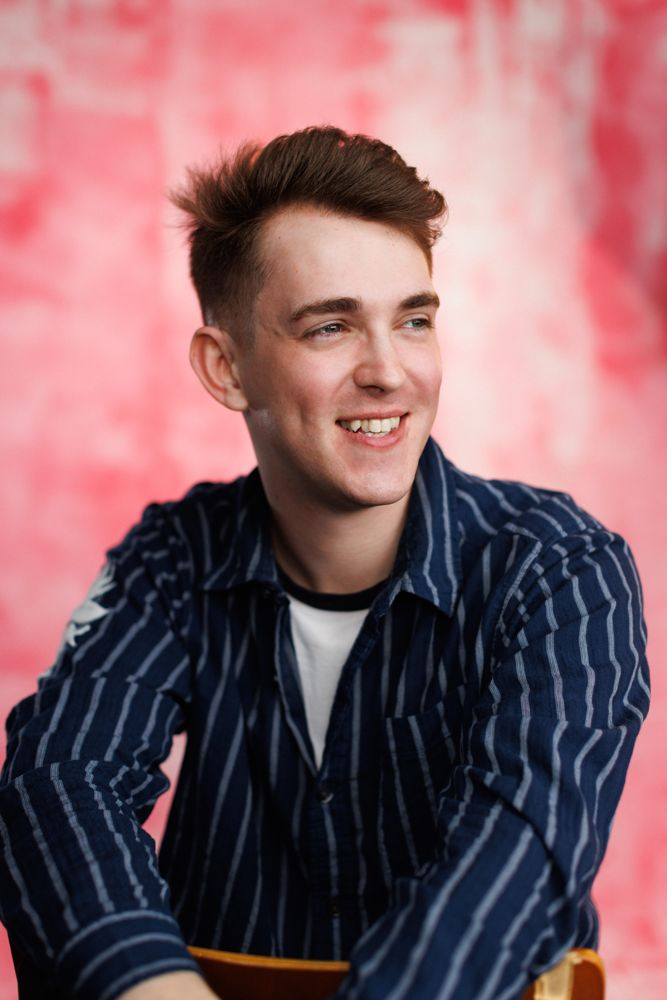

Grey Castle Productions is a new-writing company dedicated to platforming queer stories. Founded by producer Simon Castle, the company develops and stages original new work which challenges expectations and platforms bold LGBTQIA+ talent, on and off stage.

Simon Castle is an Off-West End Award nominated producer who specialises in telling queer stories. He is an independent Theatre and Engagement Producer, from Oxfordshire.

GCP's debut production, 'Is the WiFi Good in Hell?' (Underbelly) was nominated for an Off West End Award, named a Playbill Pick of the Fringe, received over ten 4-and 5-star reviews and was selected for a creative roundtable with the Secretary of State for Culture.
Other productions include: lenny. (Omnibus Theatre, nominated for Best Production at Fringe Theatre Awards); ROT. HUSK. LOSER (Park Theatre) Dead Dad Show (Soho Theatre/UK Tour); Two Tribes R&D (Leeds Playhouse/Theatre Royal Stratford East) & Dybbuk (artsdepot).
As an engagement producer, responsible for building artist development campaigns, he has produced on: Positive (Southwark Playhouse); All Of Them, Dead (UK Tour) & Power of Creativity (Wizard Theatre/Brent Council).
Simon extensively works in artist development, with significant producing and writing facilitation experience with The Kiln Theatre, NT Connections, The Royal Shakespeare Company, The PappyShow, NT Connections, The North Wall Arts Centre, house southeast, Creation Theatre and People's Theatre Collective.
Simon is an alumnus of The National Theatre's Playwriting Programme, Soho Theatre's Writers' Lab and Alumni Group, The North Wall Arts Centre's Catalyst Programme and a Finalist for the Jerwood Writers in Residence with Pentabus, 2025.
Simon is also a registered Access Support Worker for Arts Council England and in two years of producing has raised over £350K for independent artists and companies across a range of projects.

Grey Castle Productions continues to collaborate with emerging queer creatives to deliver
ambitious new theatre that centres LGBTQIA+ identity and celebrates underrepresented voices.
Collaborate with us →